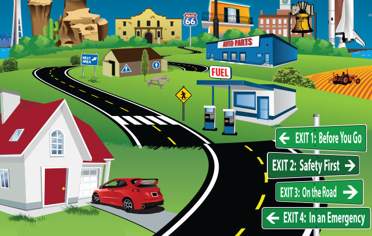

Texting While Driving
A major cause of car
accidents in the last decade has been texting while driving. Just a second distracted by a cell
phone screen can end and death lives matter text don't
Speed
No longer the number one cause of fatal
collisions excessive speed and other types of careless driving remain deadly
Bad Weather
Adverse weather conditions are I would
3rd wrist loss of control can be instant without warning and devastating take extra care and bed
weather
Drunk Driving
Happily now down to 4th on the listed
alcohol slows reactions and impairs the perception of the violent and of risk don't take a wrong
turn don't drink and drive
Poor Visibility
Perhaps surprisingly even
responsible drivers can be at high risk during rainy weather due to streaking and smearing water on
their when screen blocking the dear view of the road ahead